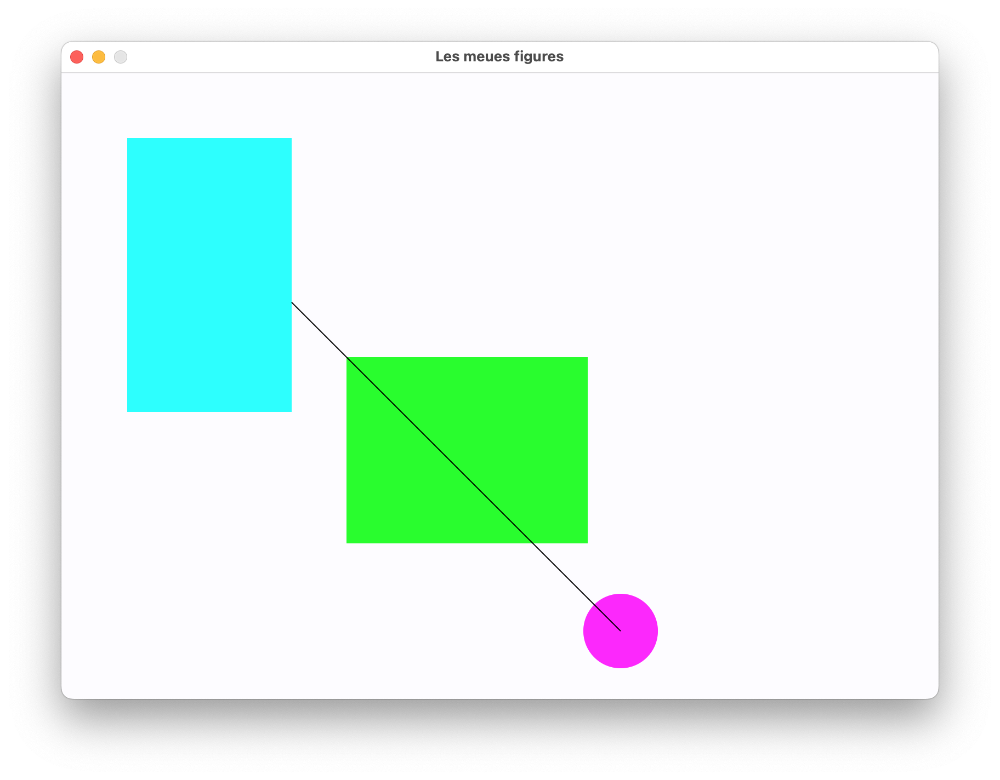

7. Projecte
Les figures

Preparem les estructures necessàries
Com a projecte final anem a implementar el clàssic exercici de les figures, on:
- Crea una classe
Puntamb dos coordenades(x,y), constructor i getters, setters, str. Implementar: - Un mètode dist a altre punt passat com argument, que retorna la distància euclidea entre dos punts.
- Un mètode dist_x i dist_y que retornen la distancia en horizontal i en vertical entre dos punts.
- Comprova que el punt el tens ben implementat, executant:
- Crea una classe
Figura, que conte unPunt(la posició on està ubicat) i un color (que serà un String de 7 caracters en hexadecimal). A banda dels mètodes habituals, també contindrà dos mètodes area() i perimetre(), sense implementar. Comprova aquest codi:
| Python | |
|---|---|
Figura:
Rectangle, afegint altrePunt. ElPuntpropi deFiguraserà el superior esquerre, i el que afegeixRectangleserà l'inferior dret (per convenció el cridaremaltre). Reimplementar els mètodes conforme calen.Cercle, afegint un radi. ElPuntdeFigurasuposarem serà el centre del cercle. Reimplementar els mètodes conforme calen.Linia, afegint altrePunt. Reimplementar els mètodes conforme calen, tenint en compte que l'area és 0, i considerarem com a perímetre la longitud de la línia.
Comprova que el codi:
retorna:
El dibuix
A banda de les estructures creades, hem de emmagatzemar totes les figures que creem en algun lloc. Eixe lloc serà el nostre dibuix, i per a no complicar les coses ho farem amb una variable global amb la següent estructura:
Com pot veure's, 800x600 són les dimensions per defecte i inicialment no tenim cap figura. És en aquest array on anirem guardant-les, tal i com es descriu a continuació.
Menu principal
Un cop dissenyades i preparades les nostres estructures, anem a crear el programa per a poder dibuixar. El programa presentarà un menú com segueix:
| Text Only | |
|---|---|
L'usuari escollirà l'opció que desitje, com es veu a continuació. Desprès d'executar totes les opcions es retornarà de nou a aquest menú, exepcte en la opció 4, com es veurà a continuació
1. Afegint figures al nostre dibuix
El programa mostrarà un nou submenú, i segons el que triem:
| Text Only | |
|---|---|
L'usari indicarà els paràmetres de la figura en qüestió, en el format indicat. Un cop llegida la linea que descriu la figura es crearà la figura corresponent (Linia, Rectangle o Cercle) i s'afegira al llistat de figures de Dibuix. Aquesta opció d'afegir figures la podrem executar tantes vegades com vullguem, com s'ha comentat en la descripció del menú.
Atencio
Fer el control d'errors que cadascú considere. Per a verificar el color en hexadecimal, es disposa implementada de la següent funció
2. Carregant la informació desde fitxers
Tenim un format de fitxer de text com es veu a continuació.
| Text Only | |
|---|---|
Deurem de:
- Demanar a l'usuari el nom del fitxer de text
- Llegir linia a linia d'aquest fitxer de text i avaluar la primera paraula del mateix:
dimensions--> modificarà les dimensions de la variableDibuix- per a la resta de figures, crearà la figura corresponent i l'afegirà a la llista de figures de
Dibuix
3. Exportant la informació a Inkscape
En aquest apartat, anem a exportar les figures que tenim a la variable Dibuix a un format estàndar de dibuix vectorial, el format SVG. Aquest format és text formatat com a XML, com podeu consultar an aquest enllaç format svg:
Haurem de:
- Crear a la clase
Figuraun mètodetoXMLabstracte. - Implementar-lo en les classes hereves, definint-lo i transformat el contingut de cada
Figuracom es veu a l'exemple - Recorrer tot el contigut de la variable
Dibuixi guardar-lo a un fitxer de text, amb l'extensió SVG. - El nom del fitxer es preguntarà a l'usuari.
4. Pintant i eixint
Per a acabar, es subministra un mètode ja totalment implementat per a representar gràficament el nostre Dibuix i acabar el programa. Aquest programa fa servir la llibreria Flet, que estudiarem més endavant per a crear interfícies d'usuari, i concretament la llibreria canvas (llençol o lienzo en castellà) per a dibuixar figures. Presetem la estructura del codi, sense entrar massa en detalls. Al programa de partida que se us passa la podeu consultar tota.
Important per a que tot funcione adequadament
- Les classes han de dir-se exactament
Linia,RectangleiCercle - La classe auxiliar
Punt, ha de tindre els mètodesgetX(),getY(),__str__,dist(),dist_x()idist_y() Figuraha de tindre els mètodesgetPos(),getColor(),__str__,toXML(),area()iperimetre()Rectangle, ademés, ha de tindre els mètodegetAltre(), per a retornar el punt inferior dret.Linia, ademés, ha de tindre els mètodegetAltre(), per a retornar l'altre punt de la linia.Cercle, ademés, ha de tindre els mètodesgetRadi(), per a retornar el radi.
Als recursos i exercicis tens l'arxius U02_Projecte_0.py com a punt de partida per a programar, així com els esquelets i funcions ja implementades.